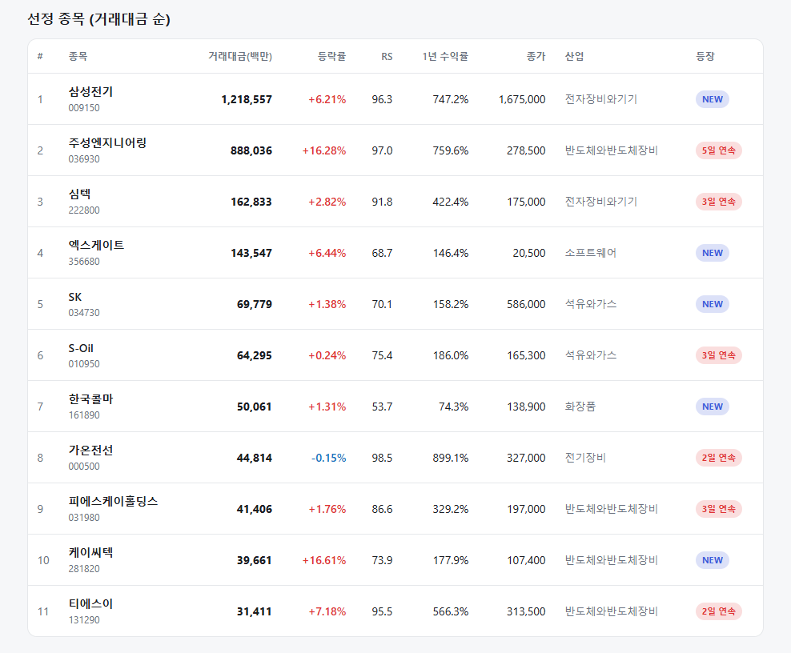
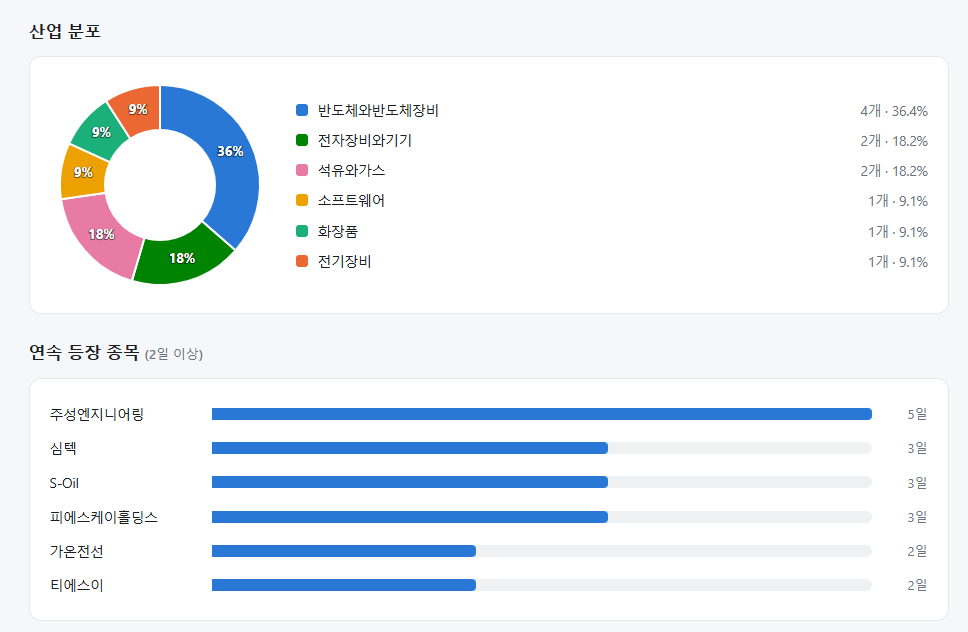
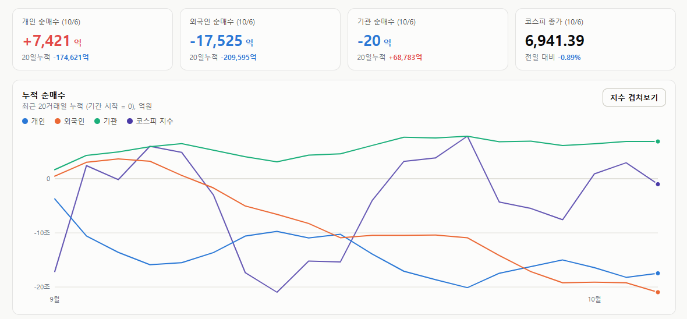

매일의 주도주 정리를 위해 기록합니다.
연속적으로 나온 종목들 또는 상승 후 조정받는 종목 위주로 리서치 해보시면 좋을 것 같습니다.


*오늘의 퀀트픽은 없습니다.
연속 종목으로 주성엔지니어링(5일), 심텍(3일) 출현했습니다.
주성엔지니어링은 5일 연속 나왔으나 단기고점 신호가 오늘 나왔습니다.
추격 매수보다는 조정 시 매수가 좋아 보입니다.
#주도섹터
전기제품 및 전자장비
주요 업종 및 종목: 전기제품(+5.83%), 전자장비와기기(+5.94%), 전자제품(+6.84%), 삼성SDI(+8.13%), 삼성전기(+5.76%), LG에너지솔루션(+4.45%), 심텍(+2.82%).
분석: 전기제품 및 전자장비 업종이 5~6%대 폭등하며 시장 상승을 이끌었습니다. 삼성SDI와 LG에너지솔루션 등 2차전지 셀·소재주가 코스닥 폭등을 견인했고, 심텍(RS 91.8, 3일 연속)과 삼성전기(RS 96.3, 신규 진입)가 시스템에 포착되며 전자부품주로 강력한 숏스퀴즈 알파 수급이 집중되었습니다.
반도체 장비 및 소프트웨어
주요 종목: 케이씨텍(+16.61%), 주성엔지니어링(+16.28%), 티에스이(+7.18%), 엑스게이트(+6.44%), 피에스케이홀딩스(+1.76%), SK하이닉스(-3.64%), 삼성전자(-1.45%).
분석: 소프트웨어 업종이 +6.01% 상승한 가운데, 삼성전자와 SK하이닉스 투톱이 하락하며 지수를 눌렀습니다. 주성엔지니어링(RS 97.0, 5일 연속, 거래대금 8,880억 원)과 케이씨텍(RS 73.9)이 16%대 폭등을 연출했고, 티에스이(RS 95.5, 2일 연속), 피에스케이홀딩스(RS 86.6, 3일 연속) 등 핵심 장비주들이 굳건한 랠리를 이어갔습니다.
#조정섹터
문구류 및 우주항공·국방
주요 업종 및 종목: 문구류(-7.00%), 우주항공과국방(-3.44%), 한화에어로스페이스(-4.10%), 가정용품(-3.09%), HD현대중공업(-1.41%).
분석: 최근 반등했던 우주항공과국방(-3.44%) 및 조선 인프라주에서 차익 실현 매물이 집중적으로 출회되었습니다.
#수급동향

코스피 지수는 -0.89% 하락한 6,941.39로 마감하며 7,000선을 내주었습니다. 반면 코스닥 지수는 외국인·기관의 순매수 유입과 2차전지 강세로 +2.98% 폭등한 919.92로 마감하며 극명한 디커플링을 보였습니다.
유가증권시장에서 외국인 투자자가 무려 1조 7,735억 원(20일 누적 -20조 9,595억 원)을 순매도하며 지수를 강하게 끌어내렸습니다. 기관 투자자는 17억 원을 순매도하며 관망세를 보였고, 개인 투자자가 7,628억 원을 순매수하며 방어에 나섰습니다.
금리가 올라도 오르고, 내려도 오른다 — 시장의 눈이 옮겨간 자리
지난 한 달 금리 이야기를 많이 했습니다. 텀프리미엄, 10년물 5%, 베어 플래트닝. 그런데 지난주 이틀 사이에 벌어진 일은 그 모든 논의에 하나의 결론을 냅니다. 시장이 금리를 보지 않기 시작했습니다. 제가 매일 정리하는 알파노트 대시보드에서도 'AI·반도체 실적'의 중요도를 올렸는데, 그 근거를 풀어 보겠습니다.(알파노트 시장의 시선: https://pdhman.github.io/report-summary/briefs.html)
① 이틀의 모순
10월 2일, 미국 9월 고용이 2만 9천 명 증가에 그쳤습니다. 쇼크였습니다. 10년물이 7bp 내렸고 S&P500은 0.7% 올랐습니다. "금리가 내리니 주가가 오른다" — 익숙한 공식이 확인됐습니다.
10월 5일, 10년물이 13bp 되올라 5.311%를 찍었습니다. 그런데 나스닥은 1.05% 올라 사상 최고, 엔비디아는 2% 상승했습니다. "금리가 올라도 주가가 오른다" — 공식이 깨졌습니다.
지난 한 달 금리에 그토록 민감했던 시장이 금리 레벨에 둔감해지고 실적에만 반응하기 시작한 겁니다.
② 왜 금리에 둔감해졌나
두 가지가 동시에 일어났습니다.
첫째, 연준 리스크가 뒤로 밀렸습니다. 고용 쇼크로 10월 인상 확률이 1주 전 69%에서 19.5%로 급락했고, 인상 시점은 12월(74.5%)로 이동했습니다. 연준이 당장 손을 쓰지 않는다는 게 확인되자, 시장은 다음 검증 대상으로 눈을 돌렸습니다.
둘째, 그런데도 장기금리는 되올랐습니다. 연준이 물러섰는데 10년물이 5.3%로 다시 오른다는 건, 이 금리를 쥐고 있는 게 연준이 아니라는 뜻입니다. 텀프리미엄, 유가, 유럽 재정 — 앞서 다룬 그 요인들입니다. 흥미로운 건 시장의 반응입니다. 연준이 통제하는 금리엔 반응하지만, 연준이 통제하지 못하는 금리엔 반응하지 않기로 한 겁니다.
③ 세 번째 검증, 10월 8일
시선이 실적으로 옮겨갔다면 다음 질문은 "실적이 그 시선을 받칠 수 있느냐"입니다. 검증은 이미 두 번 있었습니다. 마이크론이 "2027년 생산량 75%가 이미 팔렸다"고 밝힌 게 첫 번째, 금리 급등에도 엔비디아가 신고가를 찍은 게 두 번째입니다. 세 번째가 10월 8일 삼성전자 잠정실적입니다. 컨센서스는 약 107조 원입니다.
여기서 봐야 할 건 숫자 자체가 아닙니다. 발표 후 시초가 대비 얼마나 되밀리는지, 그리고 외국인이 반도체 순매수로 돌아서는지 입다. 외국인 매도가 최근 주가를 누르고 있는데, 그 매도가 매수로 바뀌면 탄력은 클 수 있습니다.
④ 방향이 갈린 두 변수 ㅡ 원유, 환율
주연에서 물러난 변수들도 있습니다. 유가는 G7이 비축유 1억 배럴 방출에 합의해 브렌트가 100.23달러로 내렸지만, 사우디의 후티 공세와 이란 봉쇄 갱신으로 100달러 아래 안착에는 실패했습니다. 다만 걸프 선적이 전쟁 전의 98%까지 회복됐습니다. 기름이 실제로 모자라서 오르는 게 아니라, 봉쇄·공격 뉴스가 나올 때마다 불안이 가격에 붙었다 떨어지는 상태입니다. 실제 공급이 정상이면 뉴스가 식을 때 가격도 내려옵니다.
원/달러는 1,342원으로 강세 추이는 지속중입니다. 수출주 실적엔 부담이지만 외국인 자금엔 유인이라 방향이 갈립니다. 실적 부담보다 외국인 유인 쪽 효과가 더 클 수 있습니다.
⑤ 남은 위험 하나
주가가 금리에 둔감해졌다고 금리 위험이 사라진 건 아닙니다. 폴리마켓 기준 연내 10년물 5.5% 터치 확률이 51%입니다. 둔감함에는 한계가 있습니다. 5.344%(직전 고점)를 다시 넘을 때 주가가 어떻게 반응하는지가, 이 둔감함이 어디서 깨지는지를 알려줄 겁니다. 10월 14일 CPI(헤드라인 3.6% 전망)가 그 시험대가 될 수 있습니다.
지난주 시장은 금리 하락에도 올랐고, 금리 상승에도 올랐습니다. 두 번 다 오른 이유는 하나입니다. 시장이 보는 게 금리가 아니라 실적이기 때문입니다. 그 실적을 확인하는 세 번째 자리가 10월 8일이고, 숫자보다 그 뒤의 수급을 봐야겠습니다.
연휴로 유난히 짧은 한주입니다.
기분좋은 한주 보내세요!
시장 핵심 지표 요약은 텔레그램 데일리 알파노트로 전달됩니다: https://t.me/daily_alphanote